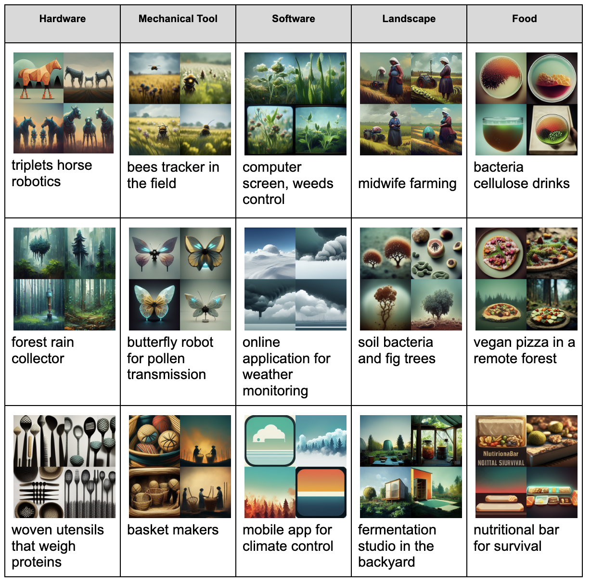
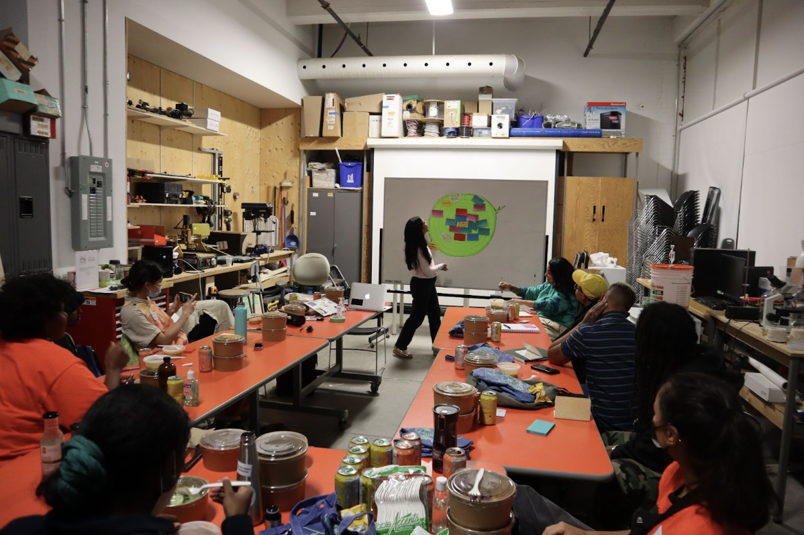
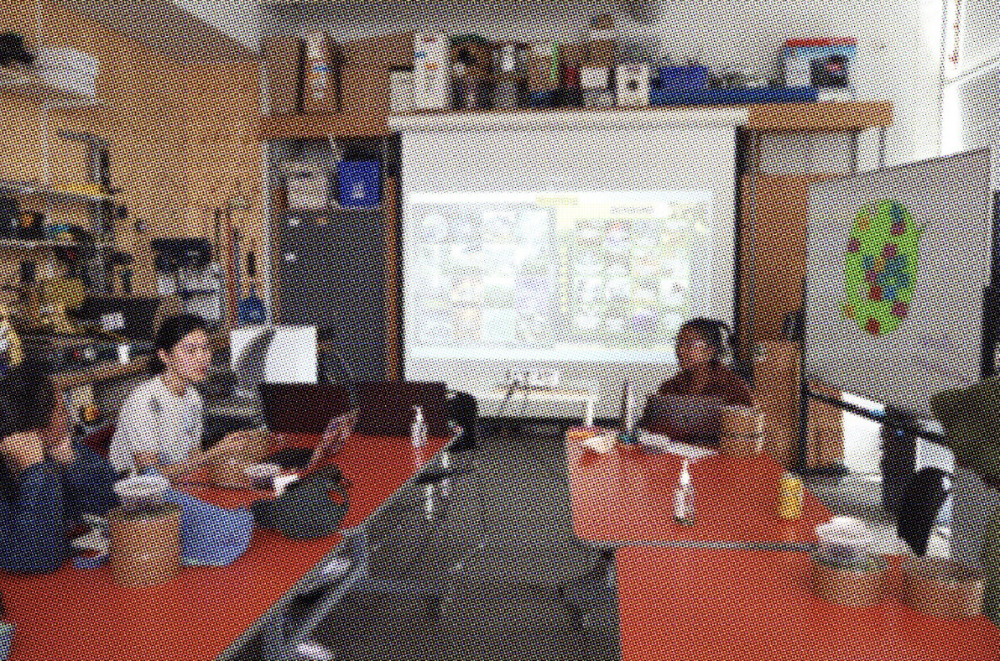

Culture²
Culture² is a platform dedicated to highlighting community based research in creative biology and ancestral knowledge and citizen science.
Roles and results
Co-organized the Conference in Summer 2021
- A two day conference (synchronous and asynchronous) focusing on the three pillars of community science, creative biology and ancestral knowledge including 18 farmers, community activists, researchers, climate educators, artists, practitioners, and food system workers.
- Presentation formats includes interviews, studio tours, cooking demonstrations, field study, formal presentations etc.
Co-organized Food Futures Co-Lab at InterAccess (New Media Gallery) in Fall 2022
- A two day workshop focusing on food systems, knowledge sharing, and food futures.
- We are creating open source composting sensors inspired from knowledge sharing and the "Manual of Decay" for BIPOC farmers and food system workers.

(Keywords from individuals' written microscinarios based on the topic of "the future of farming", "ecological engineering for climate change", "land stewardship", "Microbial ecologies", and "knowledge/skills sharing")
(Hardware speclation in creative biology and food systems using Midjourney, a prompt-driven visual generator)
 Curating, editing and publishing Culture² editorial Journal Volume No.1 for Fall/Winter 2022
- Generating sustainable funding cycle for people with limited resources and access
- We received 80+ global submissions to the platform